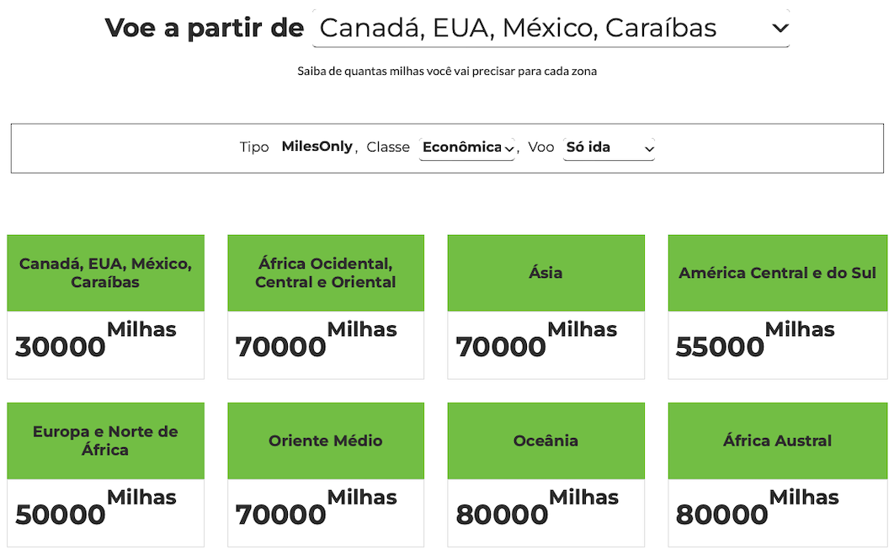

Emissão de Passagens

A emissão de passagens aéreas é a parte final da nossa Estratégia, onde você irá utilizar as suas milhas acumuladas para emitir passagens aéreas para você e/ou para outras pessoas.
O processo de emissão de passagens aéreas utilizando milhas pode ser feito via os programas de fidelidade como a Miles & More, plataformas de milhas como a Smiles, ou através dos sites das companhias aéreas.
Informações e dicas importantes para saber antes de emitir suas passagens aéreas:
- Você pode emitir passagens aéreas para você ou para outras pessoas, utilizando a sua conta, mesmo que você não vá viajar.
- NÃO é possível transferir milhas de uma conta para outra num programa de fidelidade. Uma vez que as milhas foram transferidas, por exemplo, da Livelo para a Flying Blue, não é possível transferir as milhas para outra conta Flying Blue.
- É possível emitir passagens para outras cias da mesma aliança aérea. Por exemplo, você pode emitir passagens po dentro do site da Lufthansa, para a Swiss ou TAP.
- Cias aéreas possuem parceiros bilaterais que não fazem parte da mesma aliança aérea. Por exemplo, a LATAM possui parceria com a Lufthansa, e uma cia pode emitir passagem para outra.
- Taxas aero-portuárias são sempre cobradas em dinheiro, e não podem ser pagas com milhas, por isso elas aparecem separadas no momento da emissão da passagem com milhas.
- Voos da Lufthansa saindo da Alemanha üá©üá™ possuem taxas de embarque mais caras do que voos saindo de outros pa√≠ses, principalmente quando comparando com as taxas no Brasil. Se poss√≠vel, emita passagens da Lufthansa saindo de outros pa√≠ses, principalmente Brasil üáßüá∑ e Hong Kong üá≠üá∞. A "primeira perna" pode compensar por outra cia.
- Iberia costuma ter a classe executiva mais barata saindo da Europa üá™üá∫.
- Para emitir voos com pontos Avios em qualquer cia parceira, é melhor centralizar os pontos no British Airways Executive Club e fazer a emissão para outras cia por lá.
- Para emissão em dinheiro em cias/rotas com tabela dinâmica, no geral, não faz tanta diferença comprar passagens com vários meses de antecedência, porque a precificação é muito dinâmica e muda bastante ao longo dos meses. Use ferramentas de alerta de preços e pesquise frequentemente a rota desejada.
- Fazer upgrade de classe com milhas pode sair bem mais barato, é preciso sempre verificar a disponibilidade de upgrade. A TAP costuma ter upgrades bem baratos, melhores do que comprar executiva direto, mas é preciso verificar a disponibilidade.
- Companhias que usam tabela fixa de milhas, costumam ter bem menos promoções de emissão de passagens ao lago do ano, porque o uso da tabela fixa já é bem vantajoso.
- Geralmente, é mais vantajoso emitir passagens de classe executiva do que econômica utilizando milhas, porque o valor da milha (equivalente em dinheiro) é quase sempre maior na emissão de executiva. Obviamente, cada caso precisa ser calculado com atenção.
- Famílias: é possível emitir mais de dois assentos com milhas, no geral a maioria das cias disponibiliza mais assentos. Na Europa, apenas a Iberia costuma restringir um pouco, mas emitindo pela Smiles, costuma-se ter mais assentos pela Iberia.
- Famílias com bebê: após a emissão das passagens com milhas, ligar no call center da cia aérea para
adicionar o bebê.
Dica: geralmente se paga 10% do valor da passagem em dinheiro, para a adição do bebê, tente ligar no call center do Brasil, que os valores podem ser muito menores.
Algumas informações específicas sobre passagens emitidas com milhas:
- Passagens emitidas com milhas seguem exatamente as mesmas regras de passagens emitidas com dinheiro, em relação a cancelamento, reagendamento, direitos, etc.
- A grande maioria das passagens emitidas com milhas já incluem bagagem despachada (pelo menos uma) e reserva de assento. Considere isso quando for comparar o preço de uma passagem emitida com milhas com uma passagem emitida com dinheiro.
- Geralmente é possível fazer Stopover em passagens emitidas com milhas, assim como em passagens emitidas com dinheiro. Isso significa que você pode fazer uma parada de alguns dias em uma cidade durante a viagem, sem custo adicional.
Montando a sua estratégia
A emissão de passagens é 100% individual, e depende de vários fatores, por isso não existe uma estratégia única para todos.
Alguns pontos importantes que vão te ajudar a montar a sua estratégia:
Disponibilidade
A emissão por milhas depende totalmente da disponibilidade de cada cia aérea para a sua rota, dos programas de fidelidade e de como você pode emitir as passagens.
Perguntas que você precisa considerar:
- Quais cias aéreas voam para o destino que você quer ir?
- Qual é a disponibilidade de emissão com milhas dessas cias?
- Pelo programa da cia.
- Pelo programa da aliança aérea. (passagem Iberia com milhas da British Airways)
- Por parcerias bilaterais. (passagem LATAM com milhas da Lufthansa)
No caso do uso de "Tabela Fixa", detalhado logo abaixo, ainda temos a "Disponibilidade Compartilhada",
já que as cias aéreas disponibilizam apenas uma arte dos assentos para serem emitidos por outras cias parceiras.
Por isso é tão comum tem assentos disponíveis no site da cia, mas não no site de busca de outra cia parceira.
Qual cia aérea escolher?
Novamente, aqui temos alguns pontos importantes a serem considerados:
- Qual é o seu destino final?
- Qual é o seu país de origem?
- Quantas pessoas vão viajar juntas?
- Qual época do ano?
- Como é sua flexibilidade de datas?
- Qual é a sua classe de preferência?
Mesmo morando na mesma cidade, duas pessoas podem ter estratégias e necessidades bem diferentes de emissão de passagens. Você e seu vizinho de porta podem acabar tendo estratégias completamente opostas, e isso é normal e esperado.
É preciso considerar todos os pontos acima, definir algumas alternativas, metas de acúmulo de milhas, etc.
Só assim você vai conseguir montar uma estratégia customizada e eficiente para as SUAS necessidades.
Não caia no error de copiar a estratégia de outra pessoa, ao invés disso, entenda os pontos acima, estude todos os tópicos
apresentados aqui e monte a sua própria estratégia.
Entendendo as Tabelas Fixas
As cias aéreas costumam ter uma tabela de valores para emissão de passagens por outras cias aéreas, sejam da mesma aliança ou cias parceiras de outras alianças. Essa tabela é chamada de Tabela Fixa.
Diferentemente dos preços variáveis das passagens normais, as tabelas fixas possuem valores fixos, em milhas, para conversão de milhas para emissão de passagens em outras cias. Você não pode usar e tabela fixa para viajar pela mesma empresa, a tabela fixa funciona apenas para emissão com cias parceiras.
Para emissão com Tabela Fixa, temos a chamada "Disponibilidade Compartilhada", onde
uma cia aérea disponibiliza apenas uma parte de seus assentos para serem emitidos via cias aéreas parceiras.
Por esse motivo, é mais difícil conseguir assentos em classes executivas e primeira classe, para
qualquer data que você pesquise.
Idealmente, quando for emitir passagem usando Tabela Fixa, tenha alguma flexibilidade com as datas, isso aumenta muito suas changes de encontrar assentos disponíveis em outras classes além da econômica.
Exemplo: Tabela Fixa da LATAM

A tabela fixa da Latam, mostra todos os valores, em milhas, para emissão de passagem de qualquer uma das regiões do mundo para qualquer outra região. Esses valores não mudam, eles são fixos, não importante o quanto perto da data do voo você emita a passagem.
Obviamente, a emissão é sujeita a disponibilidade de assentos no voo desejado.
Exemplos:
- Passagem saindo do Brasil com destino Europa: 201.600 mil milhas na classe Executiva.
- Passagem saindo dos EUA com destino África: 108.000 mil milhas na classe Executiva.
Com isso, você pode se programar conforme a viagem desejada e ir acumulando milhas sabendo qual é o seu alvo final.
Tem um detalhe importante que pode fazer muita diferença e passa despercebido por muita gente:

Alguns trechos são muito mais baratos saindo de outros países da América do Sul, do que saindo do Brasil,
podendo chegar a 40% de diferença.
Voc√™ poderia então emitir uma passagem saindo da Argentina üá¶üá∑, por exemplo, ir at√© lá com uma
cia low-cost, ou até mesmo de ônibus, e economizar muito mais milhas.
Obviamente isso depende de onde você esta no Brasil e conseguir passagens baratas para chegar até o país vizinho.
Dicas importantes:
- As parcerias da Latam não são fixas, é preciso pesquisar antes quais empresas podem ser utilizadas com a tabela fixa.
- NÃO pesquise os voos no site da Latam, use ferramentas como Google Flights, Sky Scanner, ou diretamente no site da cia parceira que você gostaria de emitir as passagens, a United costuma ter um sistema bom de busca que já traz resultado de outras empresas da mesma aliança, mas você pode usar o site da Air France ou da British também. Você precisará anotar o horário e número do voo para informar a Latam.
- A emissão pode ser feita pelo WhatsApp oficial da Latam: escreva "RESGATAR PASSAGEM COM LATAM PASS" ou "AGENTE" e siga o roteiro de pedir emissão com a tabela fixa.
- Outra opção é ligar diretamente na central da Latam para emitir as passagens usando a tabela fixa.
- Após ligar, use as opções 2 > 3 > 1. Quando um agente te atender, peça paraser transferido para a central de emissão com tabela fixa.
Exemplo: Tabela Fixa da TAP
Na TAP as coisas são um pouco mais simples, é possível conseguir ir mais longe pelo site mesmo*.
* Ainda assim pode ser necessário ligar no call center da TAP para fazer a emissão.
Navegue para TAP Miles&Go > Como Reservar com Milhas
Depois é só escolher "Star Alliance" ou "Outras companhias":

Você conseguirá ver os valores necessários em milhas para cada trecho.
Além da disponibilidade, esses sistemas de busca são geralmente bem ruins e vivem com bugs, eventualmente é preciso refazer a busca algumas vezes em horários diferentes para conseguir melhores resultados.
Apesar desse ser o último tópico que compõem nossa estratégia, tem alguns tópicos adicionais que você realmente deveria conhecer, e assim poder extrair o máximo da sua estratégia individual.
Ferramentas Importantes
Grande parte da emissão eficiente de passagens usando milhas, depende muito de muita pesquisa prévia para suportar a escolha de rotas, opções de cias aéreas, o que fazer com os pontos acumulados, quais assentos escolher, etc, etc.
Tem um grande número de variáveis que você terá (na maioria dos casos) que escolher antes de efetivamente iniciar a emissão das passagens.
Vamos listar aqui alguns sites que fazem muita diferença no seu processo de pesquisa:
- Google Flights: Buscar por voos para uma rota trazendo resultados de várias cia aéreas, gráficos de preço, que podem ser bem úteis para ajudar na sua programação.
- SkyScanner: Semelhante ao Google Flights, mas costumar ter resultados até melhores.
- FlightConnections: Excelente ferramenta para descobrir rotas diretas para qualquer aeroporto no mundo.
- Seats.Aero: Uma ferramenta incrível para encontrar voos awards, que podem ser emitidos com milhas. É atualmente a ferramenta mais completa e com melhores resultados.
- SeatGuru: Permite pesquisar e visualizar o layout de assentos de um avião que faz uma rota que você queira comprar. Assim é possível ter uma ideia melhor das opções, espaços e outros benefícios que podem ser oferecidos numa aeronave em particular.
- Passageiro de Primeira: Informações e notícias sobre promoções e descontos em cias aéreas e programas de fidelidade.
- Pontos Pra Voar: Informações e notícias sobre promoções e descontos em cias aéreas e programas de fidelidade.
- Múltiplos Destinos: Informações e notícias sobre promoções e descontos em cias aéreas e programas de fidelidade.
Alguns dos sites listados tem contas pagas, mas é possível utilizar todos eles (com algumas restrições) sem pagar nada.
Boas Viagens! ✈️